Consider a harmonic with poloidal mode number 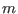 and toroidal mode number
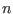,
Choose a radial profile of the amplitude
Figure 35 plots the two-dimensional mode structures on the poloidal
plane for two profiles of the radial phase variation given by
and
respectively. Note that, compared with the case of
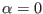 (no radial
phase variation), the radial phase variation given by Eq. (329)
influence the mode structure on the poloidal plane, generating the so-called
mode twist or shear[11], as shown by the left figure of Fig.
35.
Figure:
Two dimensional structure (on
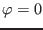 plane)
given by Eqs. (326) and (327) with 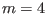, 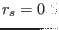,
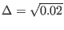, 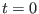. Left figure is for
and right
figure is for given by Eq. (334). The mode propagates
(rotates) in the clockwise direction on the poloidal plane (the zero point
of  coordinate is at the low-field-side of the midplane and the
positive direction is in the anti-clockwise direction). A GIF animation of
the time evolution of the mode can be found at
http://theory.ipp.ac.cn/~yj/figures/mode_rotation3.gif
coordinate is at the low-field-side of the midplane and the
positive direction is in the anti-clockwise direction). A GIF animation of
the time evolution of the mode can be found at
http://theory.ipp.ac.cn/~yj/figures/mode_rotation3.gif
| 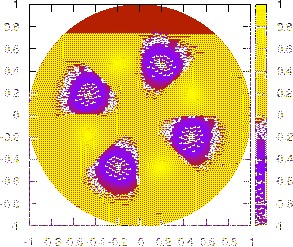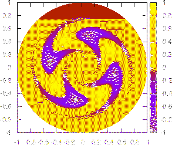 |
Consider a mode composed of two poloidal harmonics
where 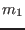 and 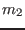 are the poloidal mode number of the two poloidal
harmonics. Consider the case
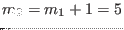. Then at the high field side
of the midplane
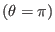 of
poloidal plane, equation
(330) is written
At the low field side of the midplane
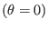 of
poloidal
plane, equation (330) is written
Equations (331) and (332) indicates the amplitude of the mode
at the low field side is larger than that at the strong field side, i.e., the
mode exhibits a ballooning structure.
For a radial profile given by
and an initial phase
, Figure 36 plots the
two-dimensional structure of the mode on the poloidal plane. The inital phase
can have radial varation and this has effects on the 2D structure of
the mode. For instance, is chosen to be of the form
The resulting 2D mode structure is given in the right figure of Fig.
36, where the so-called mode shear can be seen[11].
Figure 36:
Two dimensional structure (on
plane)
given by Eqs. (330) and (333) with
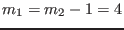, ,
, . Left figure is for
and right figure is for given by Eq. (334). Note
that the mode amplitude at the low field side is larger than that at the
high field side. The mode propagates (rotates) in the clockwise direction on
the poloidal plane. A GIF animation of the time evolution of the mode can be
found at http://theory.ipp.ac.cn/~yj/figures/ballooning_animation.gif
| 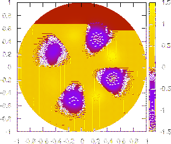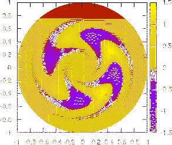 |
yj
2015-09-04